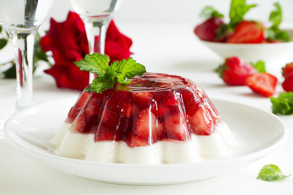
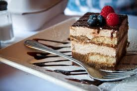

Пищевой коллоидный раствор, в который добавляют желирующий агент, при этом остывая вся масса получает студенистый вид. Желе готовится также вываркой желатина из телячьих ног и голов, а также свиной кожи.

Итальянский многослойный десерт, в состав которого входят сыр маскарпоне, кофе, куриные яйца, сахар и печенье савоярди. Как правило, десерт припудривают какао-порошком. Возможна вариация с добавлением грецкого ореха.
 Блюдо европейской и американской кухни, представляющее собой сыросодержащий десерт от творожной запеканки до суфле. Хотя данное блюдо и называют тортом или пирогом, чизкейк не бисквитный десерт, так как его основанием чаще всего являются толчёное песочное печенье.
Блюдо европейской и американской кухни, представляющее собой сыросодержащий десерт от творожной запеканки до суфле. Хотя данное блюдо и называют тортом или пирогом, чизкейк не бисквитный десерт, так как его основанием чаще всего являются толчёное песочное печенье.
Круглое или кольцеобразное, жаренное во фритюре хлебобулочное изделие, с начинкой или без неё. Дырка в пончике предназначается для того, чтобы извлечённый из горячего масла он был нанизан на стержень, с которого потом продукт кладётся в кулёк или на тарелку покупателю.